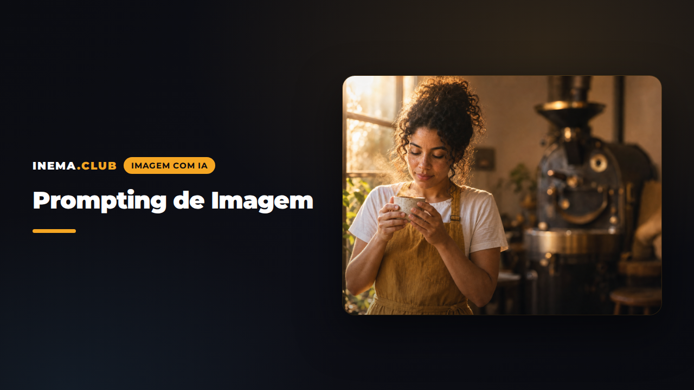
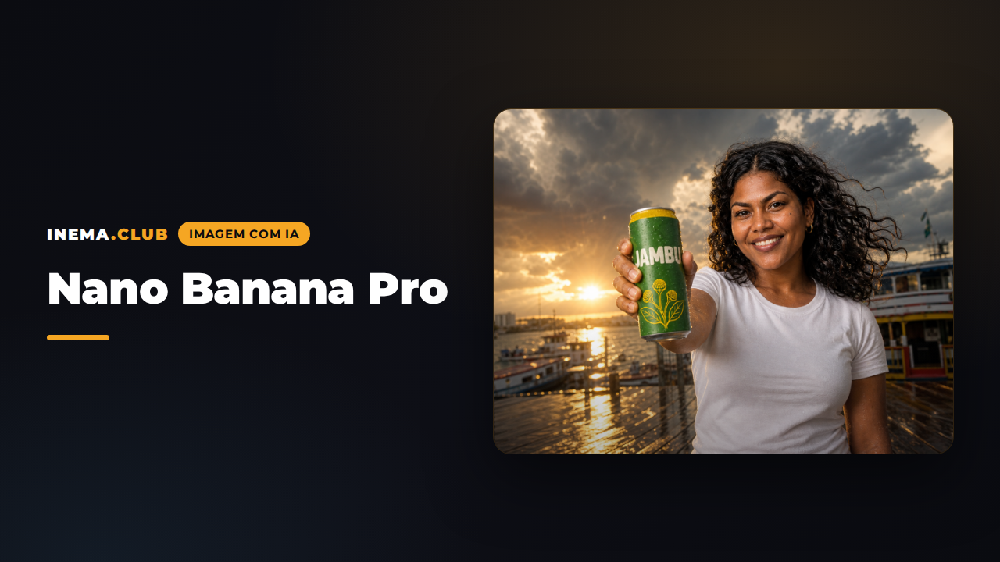

Imagem com IA
Três cursos gratuitos para dirigir imagens com IA como um diretor de fotografia: o prompt em camadas, a campanha de marca completa e o olhar treinado. Cada conceito vem com a imagem que ele produz e o prompt exato que a gerou.

Prompting de Imagem
Pense como diretor de fotografia
7 módulos · 53 tópicos · 93 imagens de exemplo
Abrir curso →
Nano Banana Pro
Uma campanha de marca completa, do produto à entrega
6 módulos · 44 tópicos · 68 imagens de exemplo
Abrir curso →Olhar Treinado
Gosto visual que vira decisão
6 módulos · 43 tópicos · 69 imagens de exemplo
Abrir curso →Ordem sugerida: Prompting de Imagem → Olhar Treinado → Nano Banana Pro. Imagens de exemplo geradas com GPT Image (Codex); pessoas e marcas fictícias.